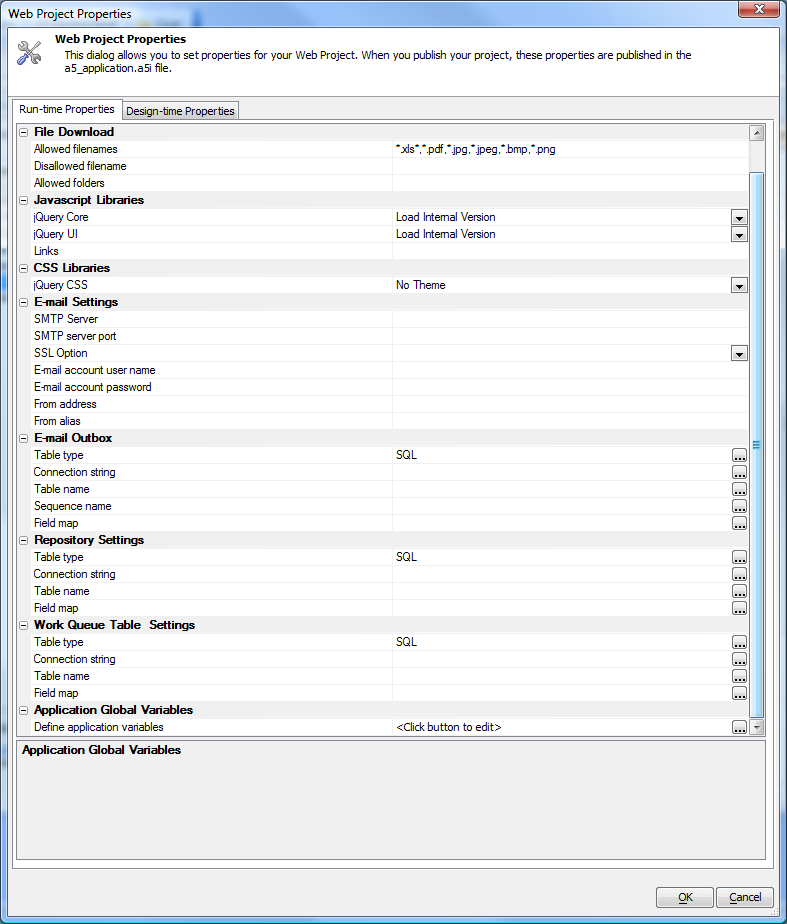

Web Projects Control Panel Enhancements
In Version 11, the Web Projects Control Panel has been enhanced in several ways.The image below shows the enhanced Web Project Properties dialog. This illustration applies to several of the following articles.

Contents
- Restore Component from Backup V11
- Revised New Web Component Dialog V11
- Web Application Repository V11
- Work Queue V11
- Application Global Variables Web Project Properties V11
- Project Style Web Project Properties V11
- Web Projects Control Panel - Recently Selected Projects Button V11
- Web Projects Control Panel - Filter V11
- Help Topics for Controls - Project Help Table V11
- PDF Printing via Microsoft XPS Printer Driver Web Project Properties V11
- Video Finder V11